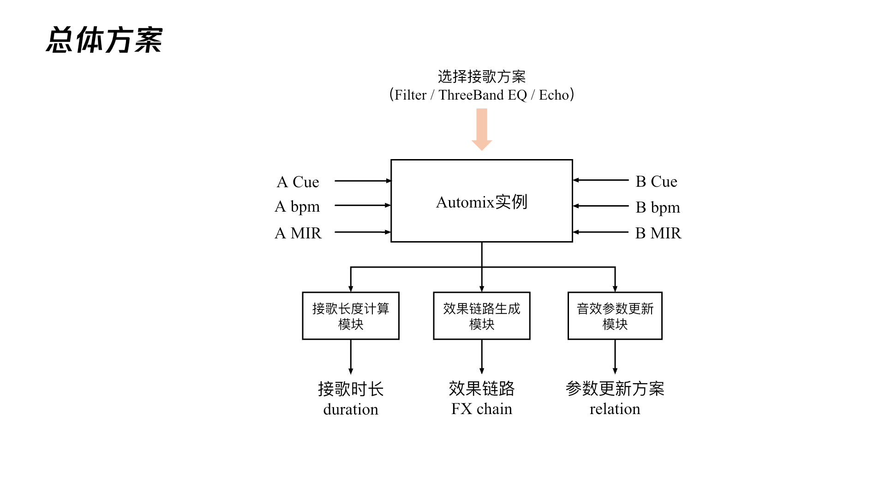

Automix
Automatic song transitions and playlist reranking for continuous music listening.
Available in QQ Music · Official feature introduction

Song transitions
Automix connects consecutive songs into a continuous listening experience. Rhythm, key, and vocal-boundary information guide the choice of cue points, transition duration, tempo changes, and audio effects.
Transition planning coordinates the outgoing song with the incoming one, combining tempo adjustment, gain changes, and filtering. Cue-point refinement focuses on avoiding abrupt vocal cut-offs and making the handover fit the musical structure.
System overview

Playlist reranking
A smooth playlist depends on both how songs are joined and which songs play next. Pairwise compatibility scoring supports track selection and reranking, seeking neighboring songs that offer better transition opportunities.
This complements fixed-order transition planning: one improves the handover between a given pair, while the other adjusts the sequence to improve rhythmic continuity and the overall listening experience.
Listening and editing
A listening and editing workbench brings music-analysis checks, transition planning, playback comparison, and configuration export into one workflow. Candidate transitions can be inspected and adjusted before evaluating their listening quality.
Comparisons include both problem cases and normal transitions, with records of the audio versions and processing settings. Listening feedback guides iteration alongside automated checks.
Listening evaluation
The optimized version passed an internal evaluation in October 2026. The study compared the existing online version with offline optimization candidates and included a separate cross-platform preference test.
Cue-point refinement. With song order held fixed, refinement reduced inappropriate vocal cut-offs and improved transition structure and rhythmic continuity.
Playlist reranking. Reranking improved overall listening experience, rhythmic continuity, perceived effects, and transition structure in the evaluated sample, with the largest score gain in rhythmic continuity.
Blind preference comparison. For selected song-transition pairs from QQ Music and Apple Music, QQ Music received more preference votes. This result reflects listening preferences within the tested sample, rather than an advantage on every evaluation dimension.
These findings refer to the versions tested in the October 2026 evaluation.